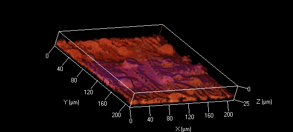

Biofilm
Rainbofilm
Sugarfilm
Parts
Achievements
Tools
Results
Microscopy Images

Figure 1
The figure shows the modified DH5alpha’s biofilm formed on rubber tube. The pink color was due to the RFP expressed by the bacteria. The picture was obtained with Leica DME microscope, under 40X objective.

Figure 2
3D CLSM picture of the biofilm formed by E. Coli DH5alpha. The picture was obtained with Zeiss LSM 710NLO confocal laser scanning microscope, using a 20X objective. The colors of the biofilm were not from the fluorescence proteins but artificially added in order to give better resolution.

Figure 3
CLSM image of the stratified biofilm obtained with the Cell Culture Plate Method. It was formed by our modified E.Coli expressing device BBa_K561003 (you can refer to our Rainbofilm module for more information). The picture was taken by Zeiss LSM510 Meta confocal laser scanning microscope, using a 63? oil-immersion objective.

Price comparison
Biofilm reactor from biosurface company CDC Biofilm Reactor: $770 Model
DFR 110 Drip Flow Reactor: $989.00 BST Model DK 20-1 Disk Reactor System
with stir plate and support stand: $1,040.00.
Summary
The modified DH5alpha biofilm formed on several kinds of substratum in our experiment, such as rubber tube, cell culture plate, glass slide and filter membrane. The biofilm, consisting of aggregated bacteria, was closely anchored on the substratum. Confocal laser scanning microscopy is a frequently-used and effective tool for biofilm observation. The profile of biofilm could be clearly observed when RFP was expressed by the bacteria and the uneven surface structure is shown in the 3D CLSM picture.
Three methods used to observe the formation of the biofilm were quite efficient: bubbling method, rubber tube method and cell culture plate method. It reached the largest thickness in rubber tube assay. In bubbling assay, the stability of biofilm increased while it was much thinner. Both the two make use sheer force to accelerate biofilm formation. In cell culture plate assay, different materials of substratum were used, including glass slip, PETE and PC. On glass slip, biofilm maintained the stability and obtained medium thickness that fit well for further application. What’s more, the unit cost little and the material helped to achieve a clear image. So we took glass slip laying in cell culture plate assay as the major method for biofilm formation.
Biofilm formed in two or three days in LB medium. Meanwhile, the oxygen concentration gradient formed due to the variation of the depth. According to the modeling results, the gradient became shaper and shaper during the formation of biofilm, which underlay the construction of a favorable device for biofilm stratification.
References
1.Bandara HM, Yau JY, Watt RM, Jin LJ, Samaranayake LP.
Escherichia coli and its lipopolysaccharide modulate in vitro Candida
biofilm formation. J Med Microbiol. 2009 Dec; 58(Pt 12): 1623-31.
2. Klausen M, Heydorn A, Ragas P, Lambertsen L, Aaes-Jorgensen A, Molin
S, Tolker-Nielsen T. Biofilm formation by Pseudomonas aeruginosa wild
type, flagella and type IV pili mutants. Mol Microbiol. 2003 Jun; 48(6):
1511-24.
3.Almeida C, Azevedo NF, Santos S, Keevil CW, Vieira MJ. Discriminating
multi-species populations in biofilms with peptide nucleic acid
fluorescence in situ hybridization (PNA FISH). PLoS One. 2011 Mar 29;
6(3): e14786.
4.Teal TK, Lies DP, Wold BJ, Newman DK. Spatiometabolic stratification
of Shewanella oneidensis biofilms. Appl Environ Microbiol. 2006 Nov;
72(11): 7324-30.
5.Rani SA, Pitts B, Beyenal H, Veluchamy RA, Lewandowski Z, Davison WM,
Buckingham-Meyer K, Stewart PS. Spatial patterns of DNA replication,
protein synthesis, and oxygen concentration within bacterial biofilms
reveal diverse physiological states. J Bacteriol. 2007 Jun; 189(11):
4223-33.
6.Gonzalez Barrios AF, Zuo R, Hashimoto Y, Yang L, Bentley WE, Wood TK.
Autoinducer 2 controls biofilm formation in Escherichia coli through a
novel motility quorum-sensing regulator (MqsR, B3022). J Bacteriol. 2006
Jan; 188(1): 305-16.
7. Dickschat JS. Quorum sensing and bacterial biofilms. Nat Prod Rep.
2010 Mar; 27(3): 343-69.
8. Lopez D, Vlamakis H, Kolter R. Biofilms. Cold Spring Harb Perspect
Biol. 2010 Jul; 2(7): a000398.